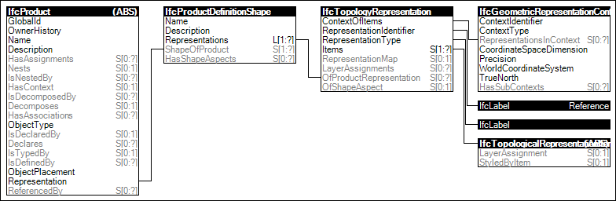

Structural activities may have a 'Reference' representation describing the distribution of a load.
Figure 55 illustrates an instance diagram.

Figure 55 — Reference Topology
Link to this page
 Link to this page
Link to this page